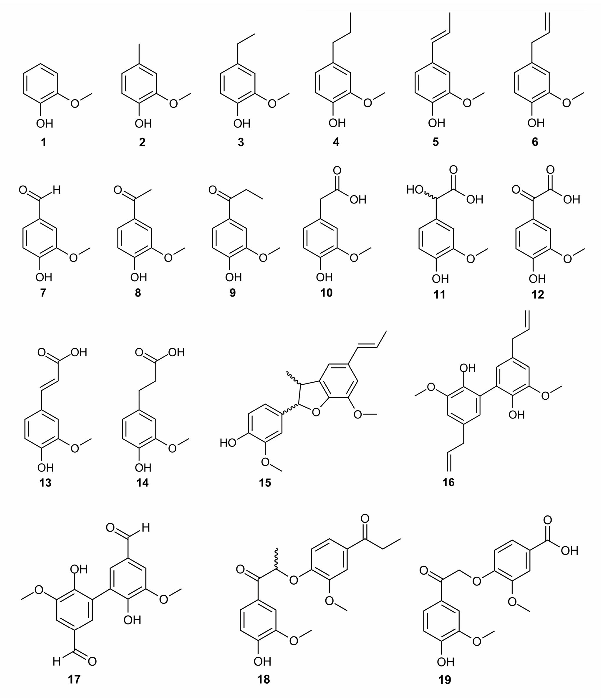

Lauberte et al., Molecules 2019, 24, 1794
Liga Lauberte; Gabin Fabre; Jevgenija Ponomarenko; Tatiana Dizhbite; Dmitry V. Evtuguin; Galina Telysheva; Patrick Trouillas.
DOI: 10.3390/molecules24091794 · Full source article
Lignin Modification Supported by DFT-Based Theoretical Study as a Way to Produce Competitive Natural Antioxidants
Table 1
Calculated O–H bond dissociation enthalpy (BDE), electron transfer enthalpy (ETE), and radical deactivation indexes (RDI) in DPPH• and ABTS•+ assays of the lignin modeling compounds.
| Number of the Compound | Lignin Modeling Compound | BDE (kcal mol−1) | DPPH• RDI | ETE (kcal mol−1) | ABTS•+ RDI | pKa in Water b |
|---|---|---|---|---|---|---|
| 1 | guaiacol | 82.4 | 1.00 ± 0.03 | 109.0 | - | 9.93 |
| 2 | methylguaiacol | 80.3 | 1.38 ± 0.03 | 105.7 | 0.92 ± 0.03 | 10.27 |
| 3 | ethylguaiacol | 80.5 | 1.35 ± 0.04 | 106.0 | - | - |
| 4 | propylguaiacol | 80.4 | 1.53 ± 0.02 | 106.0 | 1.58 ± 0.07 | 9.85 |
| 5 | isoeugenol | 77.7 | 0.90 ± 0.09 | 105.7 | 0.67 ± 0.05 | 9.89 |
| 6 | eugenol | 81.0 | 1.72 ± 0.07 | 107.3 | 0.96 ± 0.04 | 10.15 |
| 7 | vanillin | 85.3 | 0.02 ± 0.01 | 121.4 | 0.57 ± 0.03 | 7.40 |
| 8 | acetovanillone | 85.2 | 0.03 ± 0.01 | 119.5 | 0.54 ± 0.03 | 7.81 |
| 9 | propiovanillone | 85.0 | 0.05 ± 0.01 | 118.9 | 0.45 ± 0.04 | 7.98 |
| 10 | homovanillic acid | 82.0/78.7 | 1.18 ± 0.03 | 109.1/102.0 | 1.67 ± 0.02 | 4.41/ 10.52 |
| 11 | vanillylmandelic acid | 82.5/79.0 | 0.98 ± 0.02 | 111.3/103.3 | 0.92 ± 0.02 | 3.43/ 9.93 |
| 12 | vanilglycolic acid | 86.9/83.7 | 0.08 ± 0.01 | 125.7/116.7 | 0.26 ± 0.01 | 1.60/ 7.54 |
| 13 | ferulic acid | 81.8/77.6 | 1.23 ± 0.03 | 116.8/106.0 | 2.39 ± 0.07 | 4.56/ 9.39 |
| 14 | dihydroferulic acid | 81.2/79.5 | 1.23 ± 0.06 | 107.4/103.5 | 1.39 ± 0.04 | - |
| 15 | dehydrodiisoeugenol | 81.9 | 0.67 ± 0.02 a | 109.5 | - | - |
| 16 | dehydrodieugenol | 80.1 | 2.72 ± 0.03 a | 106.3 | - | - |
| 17 | divanillin | 84.8 | n.d. c | 121.6 | 0.16 ± 0.03 | 6.16/ 10.07 |
| 18 | dipropiovanillone | 86.0 | 0.014 ± 0.01 | 122.0 | - | - |
| 19 | acetovanillonylvanillic acid | 86.5/85.6 | 0.02 ± 0.01 | 121.5/120.0 | 0.26 | - |
a imported from Bortolomeazzi, et al. [47]; b imported from Ragnar, et al. [48]; c the compounds insoluble in the reaction medium.
2. Results and Discussion: reported regressions
XML section: sec2-molecules-24-01794. Complete selected paragraphs follow.
BDE values followed a trend similar to the RDI values of DPPH• and ABTS•+, as evidenced by regression coefficients (R2) of 0.63 and 0.48, respectively. The regression analysis by excluding extreme cases (i.e., compounds 5 and 16) nearly reached an acceptable linear correlation (R2 = 0.89 and 0.72, respectively). This confirms the relevance of BDE as the major descriptor of the antioxidant activity, as already seen for DPPH• scavenging activity of flavonoids [44,45,46].
2.2. ABTS values in prose for compounds 5 and 6
XML section: sec2dot2-molecules-24-01794. Complete selected paragraphs follow.
Surprisingly, both 5 and 6 showed a similar and efficient antioxidant activity against ABTS•+ (RDI values 1.45 and 1.44 for 5 and 6, respectively). This can be rationalized by the kinetically preferential SPLET mechanism in water. Both compounds exhibit low ETE values (105.7 and 107.3 kcal mol−1, respectively), which correlate with their efficient antioxidation activity in water against ABTS•+.
Original structures and chemical-state discussion
Figure 1. Chemical structures of the lignin model compounds.

2.4. Role of the Carboxylic Group in the β-Position of Guaiacyl Unit
XML section: sec2dot4-molecules-24-01794. Complete selected paragraphs follow.
Homovanillic acid (10) and vanillylmandelic acid (11) are guaiacyl derivatives substituted with a chain containing a carboxylic acid in β-position. The pKa of both compounds are 4.41 and 3.43, respectively, in water solution corresponding to the carboxylic acid group [48]. Thus, in all assays assessed in water, such as the ABTS•+ assay, the monoanionic form must be considered for interpretation. In pure methanol, the carboxylic acid pKa of both compounds is higher than 9 [49]. Therefore, concerning the DPPH• assay performed in methanol, the protonated form is predominant. The antioxidant activity of 10 and 11 is similar to that of 1 (RDI of 1.18 and 0.98 for both compounds, respectively, as depicted in Table 1). Compound 10 appears slightly more active than 1 and 11, in agreement with slightly lower BDE values (BDE of 82.0, 82.4, and 82.5 kcal.mol−1 for the three compounds, respectively); however, both from theoretical and experimental points of view these differences are almost insignificant. In 10 and 11, the antioxidant constructive effect of the alkyl chain appears counterbalanced by the antioxidant destructive effect of the carboxylic acid moiety. It is worth noting that the hydroxyl group in the α-position of 11 has a slight detrimental effect. Low phenolic BDEs for the monoanionic forms (78.7 and 79.0 kcal mol−1 for 10 and 11, respectively) rationalized the rather high ABTS•+ scavenging (RDI of 1.67 and 0.92, respectively). The slightly lower BDE of 10 may explain its somewhat better activity with respect to 11, however this difference is not very significant. A better explanation is given by ETE, which appears slightly lower for 10 than for 11. This confirms, at least partially, the contribution of SPLET mechanism, i.e., facilitated electron transfer from the carboxylated form to ABTS•+. Vanilglycolic acid (12) bears both the properties of a carbonyl group in α-position and a carboxylic acid in the β-position. This compound has no scavenging activity against DPPH•, which is fully supported by the high O–H BDE value (86.9 kcal mol−1). In water, 12 has two low pKa (pKa1 = 1.60 and pKa2 = 7.54 [43]), meaning that in the ABTS•+ assay, this compound is mainly mono-deprotonated (carboxylate) and slightly bi-deprotonated (carboxylate and phenolate). The first ETE value (energy required to remove an electron from the carboxylate) is high thus making SPLET inefficient. The second ETE (energy required to remove an electron from the phenolate) is significantly lower, allowing SPLET towards ABTS•+. Therefore, the remaining ABTS•+ scavenging activity is most probably due to the small percentage of bi-deprotonated form of 12.
2.5. Role of the Carboxylic Group in the γ-Position of Guaiacyl Unit
XML section: sec2dot5-molecules-24-01794. Complete selected paragraphs follow.
Ferulic acid (13) is a very well-known antioxidant polyphenol. Experimentally, it showed very good DPPH• scavenging activity (RDI = 1.23), in agreement with previously reported values [50,51]. Its dihydrogenated analog dihydroferulic acid (14) exhibits the same DPPH• scavenging activity. As for compounds with carboxylic acid moieties in β-position, these compounds exhibit low pKa values in water (4.56 for 13) but their pKa values in methanol are expected to be much higher [49]. Therefore, 13 and 14 are most likely present in their protonated form in methanol. Hence, the similar BDEs of the protonated forms (81.8 and 81.1 kcal mol−1, respectively) rationalize similar DPPH• scavenging activities for both compounds behaving by PCET. In water, both 13 and 14 are deprotonated from the carboxylic acid moieties (first pKa value is 4.56 for 13 [48]). Therefore, the higher antioxidant activity of 13 against ABTS•+can be explained by the BDE of its deprotonated form (ferulate, BDE of 77.6 kcal mol−1) compared to 14 (dihydroferulate, BDE of 79.5 kcal mol−1). Additionally, the larger π-conjugated path (delocalization of electron density) in ferulate with respect to dihydroferulate also accounts for the higher activity of ferulate. In their respective radical forms, the spin density of the radical is only located on the phenyl ring for dihydroferulatoxyl radical, whereas it also spans the conjugated side-chain for ferulatoxyl radical (Figure 3). A higher delocalization of the spin density induces higher stability of the radical, thus in agreement with lower BDE and higher antioxidant activity. It should be noted that the effect of the π-conjugation is different in 13 and 14, compared to 5 and 6, due to the presence of the carboxylic moiety.
2.2. Full paragraph discussing compounds 5/6 and dimer 16
XML section: sec2dot2-molecules-24-01794. Complete selected paragraphs follow.
Compounds 5 and 6 are special cases because of possessing delocalized π electrons in the side-chain at the para position to phenolic OH group. Both compounds differ from the location of the double bond (Figure 1). In 5, the double bond is conjugated with the phenyl ring, allowing the radical delocalization after HAT over the phenyl ring and the side-chain. The longer the delocalization, the more stable the radical, and the lower the BDE. Compound 5 indeed exhibits a low BDE value of 77.7 kcal mol−1 (Table 1). This makes 5 efficient at scavenging both DPPH• and ABTS•+ free radicals. Bortolomeazzi and coauthors evidenced that 5 may form oxidatively-induced biphenyl dimers, following fast kinetics [47]. These dimers appeared 90 times less active than 5 in terms of antioxidant efficacy, most probably because of the lowering of electrophilicity by acquiring the electron-accepting substituent in the 5th position of the guaiacyl unit (i.e., increasing BDE values). This is confirmed by the O–H BDE of 81.9 kcal mol−1 as obtained for the most abundant dimer dehydrodiisoeugenol (15), as seen in Table 1. Some contradiction between a very low BDE and the RDI value lower than 1 of isoeugenol is therefore rationalized by the quick formation of less active isoeugenol dimers. The high rate constant of dimerization may also cause quick self-termination between two isoeugenol radicals, explaining the fact that its stoichiometric factor is lower than 1 against DPPH• [20]. The double bond in 6 is not conjugated with the phenyl ring, therefore decreasing the π-conjugated path compared to 5. As a direct consequence, the BDE of the former is higher than that of the latter (81.0 and 77.7 kcal mol−1, respectively). However, surprisingly, 6 is more active than 2–4 at scavenging DPPH• (Table 1). Dimers can also be formed by two eugenolyl radicals [47]. The most abundant dimer, dehydrodieugenol (16), is approximately twice as active as the monomer (5) in terms of free radical scavenging. The BDE of 16 is 80.1 kcal mol−1, confirming its better activity. As steric hindrance may prevent planarity of the phenyl rings and extension of the π-conjugated path in the dimer, the increase in activity is mainly due to the presence of two phenolic OH groups, each one being prone to HAT and to efficient scavenge more than one free radical per one phenolic group. Additionally, 16 reacts quicker with DPPH• than 6 [47]. The 6 is therefore able to scavenge free radicals multiple times due to the formation of dimers, thus explaining the difference between its high BDE and the stoichiometric factors against DPPH•.
2.6. Effect of Dimerization
XML section: sec2dot6-molecules-24-01794. Complete selected paragraphs follow.
Compound 17 (divanillin) is the C5–C5 dimer formed from two vanillin molecules (Figure 1). It possesses two active symmetrical OH groups. Compounds 18 and 19 are arylether guaiacol dimers found in lignins. In both cases, the two guaiacyl units are β-O-4’linked. Thus, both compounds have only one active phenolic OH group. These three dimers exhibit carbonyl moieties in α-position on their para side-chains, so they share the same properties as their corresponding monomers (compounds 7 and 8). Moreover, no additional π-conjugation arises from the dimerization process, even for divanillin in which steric hindrance prevents coplanarity of both phenyl rings. Therefore, these compounds show the absence or just weak activity against DPPH• and ABTS•+, respectively, as confirmed by the high O–H BDE values (84.8, 86.0, and 86.5 kcal mol−1 for 17, 18, and 19, respectively). It is worth noting that even though 19 has a carboxylic acid moiety that can be deprotonated in solution, it is located on the guaiacyl moiety without the active OH group so with almost no influence on the BDE (Table 1).
3.3. Computational Methods
XML section: sec3dot3-molecules-24-01794. Complete selected paragraphs follow.
DFT calculations were performed with the B3P86 functional in Gaussian program as it was shown to accurately describe polyphenol BDEs [39,40,62,63]. The 6-31+G(d,p) basis set was used as providing very similar results compared to the larger and more computationally demanding 6-311+G(2d,3pd) basis set. Ground-state geometries were confirmed by a vibrational frequency analysis that indicated the absence of imaginary frequency. Enthalpies were calculated at 298 K and 1 atm. As many lignin fragments possess carboxylic acid moieties that can be deprotonated in aqueous media, all protonation states were evaluated. The solvent effect was considered using the integral-equation-formalism polarizable continuum model (IEF-PCM). Continuum models consider the molecular system embedded in a shape-adapted cavity surrounded by a dielectric continuum characterized by its permittivity (ε = 32.61 for methanol). Calculations in methanol reproduced the conditions of the DPPH• assay. All calculations were performed with the Gaussian09® software from Gauss Inc, USA [64].
3.4. Antioxidant Activity Assays (DPPH•, ABTS•+)
XML section: sec3dot4-molecules-24-01794. Complete selected paragraphs follow.
Chemicals used for the antioxidant evaluation (DPPH•, ABTS•+ and solvents) were of analytical grade (Sigma–Aldrich). All solutions were prepared freshly before the measurements.
DPPH• (2,2-diphenyl-1-picrylhydrazyl) was dissolved in methanol at a final concentration of ~10–4 mol L−1 and incubated in the dark at room temperature for 16 h. The exact concentration of DPPH• in terms of absorbency at 515 nm was calculated from a calibration curve (A515 = 8.3 × CDPPH• + 0.001).
A stock solution of ABTS (2 mM) was prepared in 50 mM phosphate buffered saline (PBS) made of 8.18 g NaCl, 0.27 g KH2PO4, 3.58 g NaHPO4 x11 H2O, and 0.15 g KCl in 1 L of distilled water. When necessary, the pH of the solutions was adjusted at 7.4 with 0.1 M NaOH. The ABTS•+ solution was produced by mixing 50 mL of ABTS stock solution with 0.2 mL of K2S2O8 (70 mM) aqueous solution. The mixture was kept in the dark at room temperature during hours 15 to 16 before use. To evaluate the antioxidant capacity, the ABTS•+ solution was diluted with PBS to reach the absorbance at 734 nm of 0.800 ± 0.030 [65]. The exact concentration of ABTS•+ was calculated from the calibration curve (A734 = 23.85 × CABTS•+ − 0.007).
A 0.03 mL DMSO solution of the lignin or relative phenolic compounds was added to 3 mL of the prepared the DPPH• or the ABTS•+ solution. Five different concentrations were used for each derivative. The decrease in DPPH• or ABTS•+ concentration was followed at a 515 or 734 nm respectively until the reaction’s completion using Perkin Elmer UV/VIS spectrometer Lambda 650 equipped with a thermally controlled cell at 22 °C. All experiments were done in triplicate. The DPPH• or ABTS•+ concentrations at steady state (i.e., primary reaction completed and no change in solution for most of compounds) were plotted as a function of the molar concentrations of the lignins or relative phenolic compounds. The antioxidant activity was expressed as a radical deactivation index (RDI) which corresponds to the number of deactivated free radicals per molecule of tested compounds in the case of lignin modeling compounds, or as the number of deactivated free radicals per phenolic OH group in the case of technical lignins and their fractions. The obtained results are shown as the average with a confidence interval (α = 0.05 level of significance). The RDI index is independent of the free radical concentration. The higher the RDI, the higher the free radical scavenging activity.